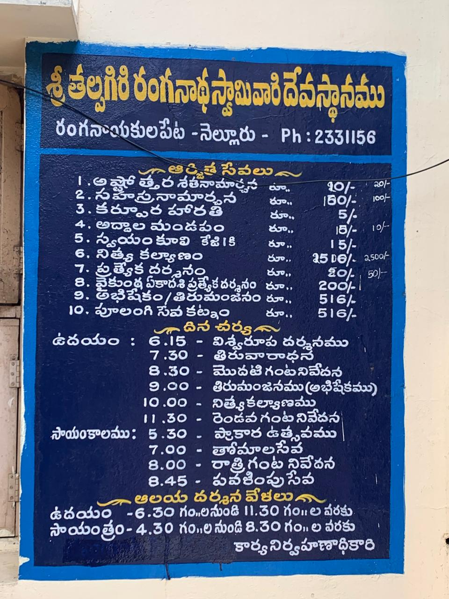
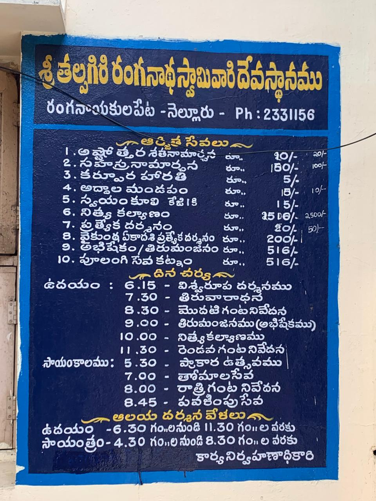
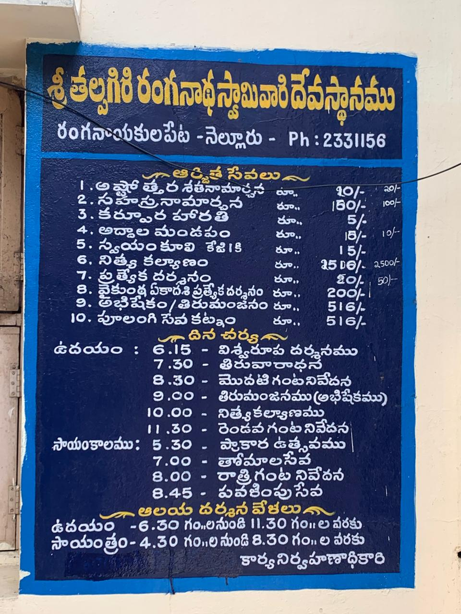

Gallery
 


Exploring the Sacred Heritage and Natural Beauty
Ranganayakula Peta stands as a testament to the harmonious blend of cultural heritage and natural beauty, situated along the sacred banks of the Penna River in Andhra Pradesh. Our comprehensive geographical survey documents the intricate relationship between the temple, river, and community.
Of Detailed Survey
Annual Festival
Community Members
Recent initiatives focus on preserving the temple's architectural heritage while maintaining its role as a living cultural center. Community engagement programs ensure the continuation of traditional practices while adapting to contemporary needs.
The Penna River plays a crucial role in maintaining the ecological balance of the region. Our survey has identified key areas for conservation and sustainable management, ensuring the river's vitality for future generations.
